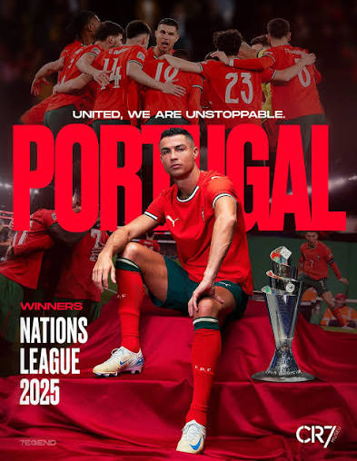

Cristiano Ronaldo
Pemain Sepak Bola Profesional & Pengusaha
Cristiano Ronaldo dos Santos Aveiro lahir di Funchal, Madeira, Portugal pada 5 Februari 1985. Beliau adalah salah satu atlet profesional terbaik di dunia yang dikenal atas etos kerja luar biasa, kedisiplinan tinggi, serta jiwa kepemimpinan di dalam maupun di luar lapangan hijau.